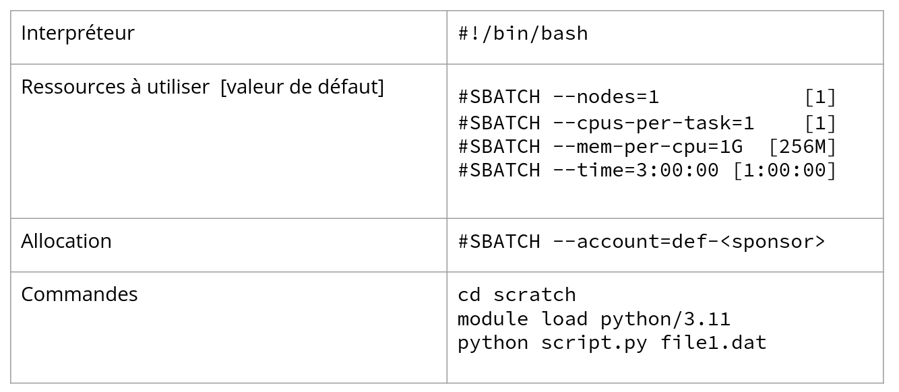
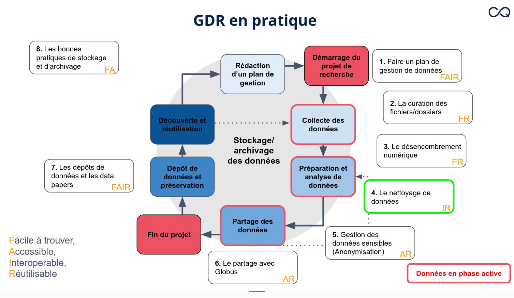
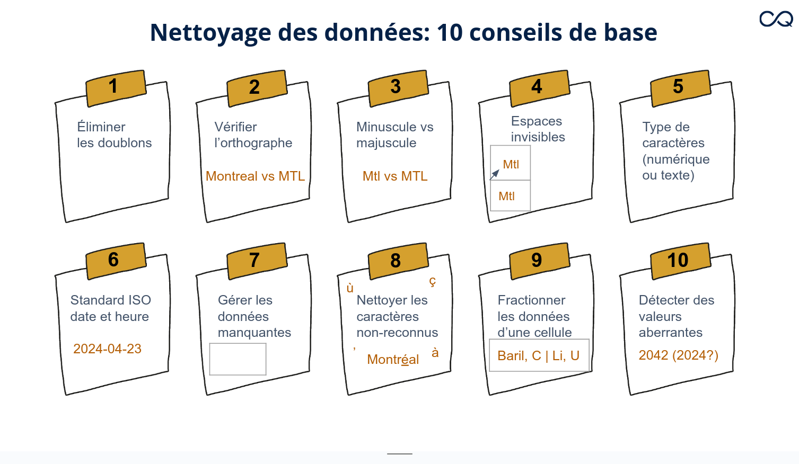

École d’été - Analyses et visualisation en Python
Mardi 21 mai 2024

- création compte sur Jupyterhub (voir projet Jupyter & documentation about Jupyter) - JupyterLab permet la création d’un notebook (comme rmarkdown)
- présentation & mot de bienvenue par Charles - Canal Slack #analyse-de-données
Formation 1 - Daniel - The Unix shell
Exercices dans JupyterHub
cheat sheet interactive pour les commandes bash –> tldr pages ou devhints mais on peut aussi utiliser command --help ou man command
prompt = invite de commande - donne le nom de usager et le nom de la machine (ici nodex)
shell = faite pour entourée le noyau de l’ordinateur et le protéger. On ne communique pas diretement avec le noyau, mais on passe par le shell
Il existe plusieurs formes de shells pour Unix (cornshell, zshell, cshell, zshrc, …), mais bash étant le plus répandu. The bash shell is written in C.
Liste de commandes à connaître:
Structure classique d’une commande command -options argument

| command | function | remarq |
|---|---|---|
pwd |
affiche le répertoire dans lequel on se trouve actuellement | premier slash / correspd à la racine d’où partent tous les répertoires - pwd for path working directory |
ctl + l or clear |
nettoyer l’écran | |
ls -F |
affiche le contenu du repo dans lequel on se trouve | for list - -F pour discerner repo & files, -h montre la taille des fichiers lisibles par l’humain, -l for long list (contient plus d’informations), -t tri par date, -S tri par taille de fichier |
cd |
navigation dans un autre repo | for change directory, commande relative au répertoire actuelle, utiliser cd .. pour revenir un niveau au dessus de là où je me trouve, cd sans argument fait repartir dans le répertoire personnel /home/user/, cd peut aussi être utilisé avec un absolute path, cd ~/project/ avec le tild qui permet de référer au repo personnel et cd . correspond au répertoire actuel, cd / dirige vers la racine de tous les fichiers |
TAB completion |
pour compléter à partir de la/les premières lettres des fichiers/dossiers présents dans le repo | |
mkdir folderName |
création d’un répertoire | for make directory - éeviter les espaces dans les noms de files and folders (sinon création de deux fichiers ou repo), pas d’accents non plus ou caractères spéciaux |
rm -r |
effece un fichier/dossier | -r is for recurssive (pour les dossiers) ce qui permet de descendre dans le repo, effacer tous les fichiers puis effacer le dossier parent, -f pour forcer l’effacement, -i pour demander (interroger) si on est sûr de remove |
nano ou touch |
création d’un fichier | équivalent d’éditeur de texte, plus efficace à utiliser sont vim ou emacs si on utilise beaucoup le shell, avec touch créé un fichier complètement vide utilisé pour des logiciels qui ont besoin d’un fichier déjà existant pour écrire les résultats |
which |
localise les fichiers binaires | |
mv lastNAme.txt newName.txt |
renomme un fichier ou déplace un fichier | for move si on ajoute un absolute path dans la deuxième partie de commande ex: mv new_work.txt ~/ |
cp source cible |
copie un fichier | possible de donner un nouveau nom au fichier copier et de le changer de repo, utiliser -r si la source est un repo, la source peut être multiple, l’essentiel étant que le dernier dossier soit la cible |
&& |
sépare deux commandes que l’on souhaite excécuter successivement | s’excecute sous condition que la première fonctionne, ; peut aussi être utilisé à la place du double esperluette && |
* |
wildcart (caractère générique) permettant un pattern matching | peu importe le nombre de caractère |
? |
remplace un seul caractère | |
cat |
voir le contenu d’un fichier texte | |
wc |
affiche nb lignes, nb mots et nb caractères | for word count, ex: wc *.txt applique la commande sur tous les fichiers txt et fait la somme, -l donne uniquement le nombre de lignes |
> fileName |
redire la sortie de commande vers un fichier | |
^c |
pour annuler | |
sort |
tri sur la prmière colonne d’un fichier | -n pour numérique, -k qui permet de choisir sur quelle colonne triée |
head |
récupère les premières lignes d’un fichier | -n permet de spécifier le nombre de ligne que l’on souhaite extraire |
\| |
pipe | dans une succession de commande, permet d’utiliser la sortie de la première commande pour excécuter la deuxième et ainsi de suite |
Exemple du pipe - Représente la puissance de l’utilisation du unix shell

==> parcourir la suite de la formation de Carpentry
Formation 2 - Hélène Gingras - Premiers pas sur les grappes de calcul

CIP = Calcul informatique de pointe tt calcul qui fait utilisation intensive de ress. info. ou qui est limité par la ressource dispo (ex. CPU, GPU, mémoire, stockage, temps)
Obj. calcul Qc = Fournir au milieu universitR des envir, informatiq et des expertises pour la recherche
Monarque = ordinateur quantique
À disponibilité: grappes de calcul, espace info-nuagiques (hébergement de site internet par exemple) et stockage de data
Voir la documentation
Voir les notebooks pour de la formation Alliance de recherche numérique chapote à l’échelle nationale (grand coordonnateur) 
Calcul Québec est une antenne de l’alliance.
Quelle grappe choisir ?
- celle déjà utilisée par le labo
- celle physiquement présente au plus proche (béluga, narval)
- celle qui correspond à nos besoins (gna)
Pour la suite, cf la présentation
Première étape après la connexion SSH, arrivé sur un noeud de connexion qui donne accès aux noeuds de calcul. Le noeud de login (qui peut être utilisé pour la session interactive) a accès à internet mais pas les noeuds de calcul. À partir du noeud de login, accès aux différents dossiers, chargement des fichiers nécessaires. Sur les grappes, sauvegarde automatique pour les espaces home (donc si fausse manip avec rm, moyen de les récupérer). Sur le noeud de connexion, possible d’utiliser git (clone) via git-lfs pour large file system qui permet d’associer et stocker des jeux de données à un répertoire git (outil complémentaire qui peut être utiliser dans le souci de reproductibilité et transparence). Pour aller chercher les données en ligne: wget, curl, python, git-lfs.
Les modules pour créer son environnement
module spider <mot clé> # recherche par mot clé
module avail [module] # disponible
module load <module> # charger un module
module unload <module> # décharger un module
module list # afficher les modules activés
module purge # Revenir à l’état d’origine💥 ATTENTION ! Ne pas utiliser conda (problématique pour les grappes)
💡 En utilisant module spider r/4.4.0, permet de voir quelles dépendances sont nécessaires.
💡 Bonne pratique: toujours préciser la version des modules que l’on charge.
💡 module spider nom_paquet fait du fuzzy matching et va sortir la liste des modules qui contiennent le nom du paquet. Si plusieurs et difficile de choisir à partir de la description, utiliser le wiki ! 😀 💡 thread = nombre de coeurs. Utile pour certains logiciel dont le paramétrage nécessite une valeur pour thread et nom pas un nombre de coeur
💡 Pour voir la liste des variables environnement —-> Slurm
Excécution des tâches
Ressources utilisées dépendent su type de tâche
- séquencielle - un seul coeur, sur un seul noeud - tâches qui s’excecutent les unes après les autres
- en parallèle qui utilise plusieurs coeurs potentiellement sur plusieurs noeuds - il en existe de deux types: de données et de tâches. Parall. de données est par ex, des tâches séquentielles sur plusieurs jeux de données en même temps. Parall. de tâches est par ex. un logiciel qui est capable d’effectuer plusieurs tâches en parall. sur un même jeux de données (assez rare dans certains domaines conne les sciences de la vie, mais souvent retrouvé en astro-physique par ex).
- ordonnanceur -
slurmdispatche toutes les tâches dans les noeuds de calcul - cf liste de commandes de slurm

💡 utiliser seff <jobID> pour voir si la demande de ressource est optimale. Car si non optimisé, crédit au profil et les tâches vont partir moins rapidement. Cependant, reset aux deux - trois semaines. Les prioritées sont indépendantes d’une grappe à l’autre, càd entre Beluga, Narval, … sshare et htop pour voir l’état de priorité quand la tâche est lancée.
- toutes les grappes ont des limites de ressources. Par ex. pour 🐬Narval
💡 GPU carte pour accélérer et nécessaire que pour certains logiciels (dans l’IA par ex), pas nécessaire pour R qui peut utiliser simplement des CPU
Soumission des tâches
La soumission est faite sous la forme d’un fichier bash.
#!/bin/bash #ligne obligatoire
#SBATCH --nodes=1 [1]
#SBATCH --cpus-per-task=1 [1]
#SBATCH --mem-per-cpu=1G [256M]
#SBATCH --time=3:00:00 [1:00:00]
#SBATCH --account=def-<sponsor>
bash scriptEntre crochet = valeur par défaut
Aller voir Running_jobs dans le wiki
cf diapo 57 de la présentation

Suivi des tâches
srun --jobid xxxx --pty htop -u $USER pour avoir accès au CPU en direct pendant que la tâche est en cours
Possible aussi d’utiliser le portail, pour 🐬Narval
💡 Prévoir un peu de ressources en plus pour le temps et la mémoire.
💡 Commandes utiles - cf diapo 59 (sbatch, squeue, scancel, seff, sacct)
Outils intéressants pour les tâches en parallèle
- GLOST
- META-FARM qui peut aider pour gérer les tâches qui ont échoué (les relancer par exemple)
- Charles conseille de préférer GNU parallel !
Espaces de stockage disponible
cf diapo 69
Mercredi 22 mai 2024
Formation 1 - Caroline Baril - Introduction à la gestion de données de recherche (GDR)
Responsable de la mise en place d’un programme de gestion de données
Données de recherche extra variées avec des volumes pouvant être très important. Multiplicité des formats de fichiers pour un type de données, ce qui représente un vrai challenge.
Cycle de vie des données

cf diapo 5
Pour chaque étape, défi de stockage et archivage. Il existe plusieurs phases actives dans ce cycle de vie
Principe FAIR

Les avantages d’une bonne gestion = favorise une recherche efficace et reproductible(!), réduit le coût de la recherche en temps et en argent (évite la redondance), favorise visibilité et impacte de la recherche et facilite science ouverte et transparente.
GDR en pratique

Formation 2 - Lina Harper - Nettoyage des données avec OpenRefine
 Voir également la formation de Software Carpentry
Voir également la formation de Software Carpentry

OpenRefine est un outil open-source, gratuit, ouvert avec UI simple et intuitif. Il supporte nombreux type de fichiers, traitement des doublons, réconciliation de plusieurs jeux de données, … et enrichissement des données via des requêtes à des APIs. Le langage de prog utilisé est GREL.
Pratique
Accès à openRefine via JupiterLab. Aller sur l’onglet software, chercher OpenRefine et le loader. Si il n’est pas présent, loader StdEnv 2020 d’Abord.
Source des données: Montréal données ouvertes
Jeudi 23 mai 2024
Pour les ressources, voir intro Python & analyse et visualisation Python
Formation 1 - Charles - Introduction à Python
GLOBALEMENT, FAIRE TRÈS ATTENTION AUX SUBTILITÉS SUR L’INDENTATIONS
- présentation de Jupyter lab
- python langage haut niveau - code qui est interprété sans avoir besoin de le compiler - de ce fait interaction facile et rapide
- formation basée sur contenu de software carpentry
- langage très utilisé dans la science des données, dev web, framework web, intelligence artificielle
Jupyter notebook
Un notebook présente un noyau (python ici) qui permet de faire des calculs dans le document créer (existe aussi avec R)
Page web avec texte, code, …. comme rmarkdown mais avec extension ipynb
Pour excécuter une section de code shift + enter et doit conserver l’ordre logique.
Eviter d’utiliser ChatGPT et Copilot quand on débute dans le langage. Utiliser à l’inverse, vérifier des sections de codes qu’on a déjà écrit.
💡💡💡 %whos = mot magique, liste toutes les variables existantes (% préfixe pour certains mot magique)
💡 Quand erreur de syntaxe, ^ pointe sous l’erreur, décalé de un caractère vers la droite. 💡 Utiliser TAB pour complétion de variables déjà définies
Fondamentaux - Type de données
Certains type de données sont immutables. List, set, dictionnary sont modifiables. Pour créer des strings, possible d’utiliser '' ou "". Au choix, mais rester persistant.
💡 pour concaténer, pas besoin de l’équivalent de function paste
Fonction = bloc de code regroupé sous un nom et qui s’excécute lorsque ce nom est appelé
Key points
- Basic data types in Python include integers, strings, and floating-point numbers.
- Use variable = value to assign a value to a variable in order to record it in memory.
- Variables are created on demand whenever a value is assigned to them.
- Use print(something) to display the value of something.
- Built-in functions are always available to use.Numpy
= librairie pour manipuler matrices et tableaux
Pour travailler avec des dataframes, utiliser la librairie 🐼 pandas
💡 help() pour avoir l’aide et les informations sur une fonction
💡 shift + tab pour activer l’intellisense sur une fonction
💡 data[:, 3] sélectionne toutes les lignes : de la troisième colonne
💡 ndarray est pour n dimension array
💥💡💥 Lors de slicing (sélection d’une suite de valeurs), selection open ended [from: to[
💥💡💥 L’indexation commence à 0
💡 small = data[:3, 36:] ici sélection des lignes de 0 à 2 et les colonnes de 36 à la fin.
Pour charger un jeux de données
data = numpy.loadtxt(fname='data/inflammation-01.csv', delimiter=',')Les librairies peuvent être chargées avec des alias.
import numpy as npdata.dtype permet de savoir le type des objets contenu dans la matrice data.
data.shape donne la dimension de la matrice data.
Dans la fonction numpy.mean(), l’argument axis = 1 ou 0 permet d’appliquer la moyenne par colonne 0 ou par ligne 1.
Pour travailler sur certaines colonnes ou lignes qui ne suivent pas, il est nécessaire de créer une vue, puis de travailler à partir de celle-ci.
Key points
- Import a library into a program using import libraryname.
- Use the numpy library to work with arrays in Python.
- The expression array.shape gives the shape of an array.
- Use array[x, y] to select a single element from a 2D numpy array.
- Array indices start at 0, not 1.
- Use low:high to specify a slice that includes the indices from low to high-1.
- Use `# some kind of explanation to add comments to programs.
- Use numpy.mean(array), numpy.max(array), and numpy.min(array) to calculate simple statistics.
- Use numpy.mean(array, axis=0) or numpy.mean(array, axis=1) to calculate statistics across the specified axis.Matplotlib
= 📈 librairie pour visualiser des données tabulaires
Les listes
💡 indexation négative pour accéder au(x) dernier(s) élément(s)
💡 indexation possible avec step list[from:to:step]
💡 pour lister en reverse, il est indispensable d’indiquer la step -1 pour que la lecture aille vers la gauche et non pas vers la droite.
💥💡💥 Possible d’aller indexer une ou plusieurs lettres dans un string, mais cette indexation ne fonctionne pas si on veut modifier une de ces lettres.
name="Darwin"
name[2] # r
name[2]="R" # ERROR💥💡💥 ATTENTION !!!!! Les copys d’éléments ne se font pas aussi simplement que dans R. Si list = list2, les deux sont NON-INDÉPENDANTES. SI modification sur l’une, sera appliquée également sur l’autre. Pour faire ceci, utiliser list2 = list.copy() ou list2 = list(list). T_T
Key Points
- [value1, value2, value3, ...] creates a list.
- Lists can contain any Python object, including lists (i.e., list of lists).
- Lists are indexed and sliced with square brackets (e.g., list[0] and list[2:9]), in the same way as strings and arrays.
- Lists are mutable (i.e., their values can be changed in place).
- Strings are immutable (i.e., the characters in them cannot be changed).Repeating actions with loops - for loop
: permet de terminer la déclaration de la ligne d’instruction de la bouble. Est suivi par le corps de la boucle qui doit être indenté.
💥💡💥 range(from, to_non_inclut, step) est un générateur qui ne va pas inscrire les valeurs dans la mémoire. Ceci permet l’optimisation quand utilisation de large séquence. Pour enregistrer dans une variable, nécessaire de faire r = list(range(1, 6)) par exemple.
Key Points
- Use for variable in sequence to process the elements of a sequence one at a time.
- The body of a for loop must be indented.
- Use len(thing) to determine the length of something that contains other values.
Making choice - if loop
- documentation
- par défaut, tout variable vide sera considérée comme
falseen terme booléen - subtilité avec
None(qui n’est pas équivalent ànull) dans une boucle.Noneest de classenoneTypeet ne peut être comparé avec d’autres type d’objet. - Bonne pratique de code = mettre en première la condition que serait la plus souvent remplie. Optimisation !
Key Points
- Use if condition to start a conditional statement, elif condition to provide additional tests, and else to provide a default.
- The bodies of the branches of conditional statements must be indented.
- Use == to test for equality.
- X and Y is only true if both X and Y are true.
- X or Y is true if either X or Y, or both, are true.
- Zero, the empty string, and the empty list are considered false; all other numbers, strings, and lists are considered true.
- True and False represent truth values.
Creating functions
🗝️ Functions let us reuse pieces of code frequently used with different parameters.
🗝️ Par défaut, ttes fonctions retournent Ǹone, d’où l’importance d’utiliser return dans le corps de la fonction.

💥💡💥 We need to verify that our functions are behaving correctly. In order to do so, we can run each function and print out the boolean result of an equality test. We can also assert that our function behave correctly by using an assertion statement. An assertion will pass when the statement is True, otherwise will raise an exception and the code or function will not be allowed to continue. This is very useful in preventing bugs and ensuring correctness.
💡 Utiliser la doc string pour ecrire l’aide de la function
def fahr_to_celsius(temp):
"""
Converts Fahrenheit to Celcius.
Parameters:
temp: Temperature in Fahr.
Example:
fahr_to_celsius(32) => 0.0
"""
# this is a comment
return ((temp - 32) * (5/9))
help(fahr_to_celsius)Exemple de fonction
def wrap(str1="", str2="*"):
if (isinstance(str1, str) & isinstance(str2, str)):
print(str2, str1, str2, sep = "")
elif type(str1) is not str:
print("Please enter a string as first argument")
else:
print("Please enter a string as second argument")
wrap("value")
wrap()
wrap("value", "+")
wrap(3)
wrap("l", 4)
# *value*
# **
# +value+
# Please enter a string as first argument
# Please enter a string as second argumentDictionnaire
Association clé valeur !
La clé doit UNIQUE, sinon on écrase le contenu précédent. Pour visualisation plus sympa des gros dictionnaire
from pprint import pprint
pprint(d)pprint is for pretty print - mais fonctionnel à partir d’une certaine quantité d’information dans le dictionnaire (fonctionne aussi avec d’autres types d’objets)
Pour visualiser la liste des clés-valeurs dans le dictionnaire, possible d’utiliser le code suivant (utilisé fréquemment):
for k, v in d.items():
print(k, v)Data treatment
variable.rstrip()remove les caractères dit blanc (espace, saut de ligne, ….)enumerate()donne les indices des valeurs dans une liste
cf exercice de tirage de nom aléatoire avec retrait
💡possible aussi d’utiliser .remove() pour faire la sans remise
💡exemple possible car pas une copie de la liste nom dans la fonction, mais bien un pointeur vers le jeux de donnée, ce qui permet de faire sa modification à chaque tirage.
Environnement virtuel sur les grappes de calculs lors des envois de tâches
Jupiter Lab est idéal pour travailler avec les notebook python (qui sont récupérables en local).
cf documentation wiki
Vendredi 24 mai 2024
Analyses et Visualisation - Pier-Luc St-Onge (analyste)
- charger, modif et sauvegarder données tabulaires
- utilisation dataframe de
pandas - grouper des données pour faire des stats
- sélectionner osus-ensemble
- combiner données tabulaires
- visualiser avec
altair(graphiques interactifs)
Formation basée sur software Carpentry
Contenu notebook IPython
Pour les données tabulaires, la librairie la plus courante est pandas (alias pd). Cette librairie permet la manip des données et fonctionne très bien avec d’autres librairies de visualisation.
À vérifier mais pandas utilise NaN plutôt que NA.
data.function() = méthode qui correspo0nd à une fonction qui doit calculer quelque chose sur la data (ex. .head(), .describe())
Différent de data.attribut qui est une fonction qui extrait une information à la data (par ex. .shape, .columns)
count dans data['nomColonne'].describe() sur une colonne ne prend pas en compte les valeurs nulles.
Les méthodes et attributs utilisés ici sont associés à pandas.
data[nomColonne].value_counts() nombre d’occurrences par valeurs
data.loc[ligne, colonne] pour sélectionner des rangées et colonnes d’un dataframe (attribut .loc), existe aussi iloc mais se comporte différemment avec l’indexation
Indice -1 ne fonctionne pas avec pandas
Pour sélection par critères, il existe isin() pour aller chercher les enregistrements dont les valeurs d’une colonne correspondent à l’une des valeurs fournies dans une liste
Méthode .dropna() permet de virer toutes lignes qui contient au moins une donnée manquante
data.isnull().sum() va sommer tous les ‘NaN’ pour chaque colonne. Permet de données un aperçu du contenu du jeu de données
Visualisation
Pourquoi altair? Pourquoi pas matplotlib?
Bien que matplotlib soit une bibliothèque de visualisation largement répandue et relativement flexible, la programmation des graphiques ne suit pas une grammaire spécifique.
Ainsi, pour ce chapitre, nous avons fait le choix de vous présenter la bibliothèque altair qui facilite la création de graphiques hautement informatifs tout en s’intégrant bien avec Pandas. Le fonctionnement de altair se base sur la grammaire des graphiques interactifs de Vega-Lite, ce qui rend la programmation à la fois élégante et puissante.
Nous verrons différents concepts de visualisation qui peuvent être reproduits plus ou moins facilement avec d’autres bibliothèques telles que matplotlib, plotnine (utilise grammaire de ggplot2) dans R, plotly et seaborn.
💡 Possible d’utiliser plotly pour graphique interactif, juste plus compliqué à installer sur le notebook.
💡Voir exemple altair
💀 Attention ! Par défaut, altair a une gamme de couleur limitée à 10. Si plus de valeur à colorer, la palette devient redondante.
💡 Palette de couleurs dans altair
💡 altair a une technique spéciale appelée création de facettes permettant de diviser un graphique en plusieurs sous-graphiques selon les valeurs d’une variable.